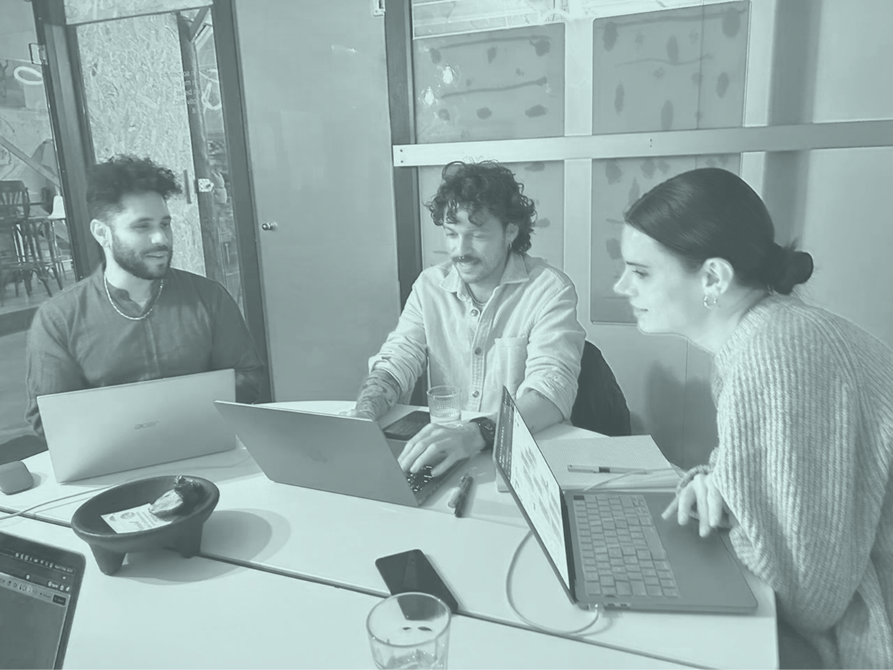

Quedadas periódicas donde nos reunimos a compartir conocimiento, programar y aprender juntas. Muchas personas tienen ideas y proyectos que no llevan adelante porque se sienten solas; esta quedada pretende ayudarnos y alentarnos mutuamente para que estos proyectos salgan adelante.
Será una quedada mensual abierta a todes, donde nos ayudaremos unas a las otras a grabar y editar material para redes sociales. Hablaremos sobre redes sociales descentralizadas y, entre risas, compartiremos el fruto de nuestra labor al final.
Estamos construyendo nuestro primer proyecto de software: una aplicación para colectivizar y compartir lugares seguros para la comunidad, tomando en cuenta temas de interseccionalidad y necesidades diversas.
Actualmente tenemos a dos mentores interesadxs en guiar a personas queer en búsqueda de trabajo en la industria de la tecnología. Nuestra intención es poder conectar a otres mentores interesades en ayudar a otras personas queer locales a entrar en el sector tecnológico para conseguir una vida mejor.